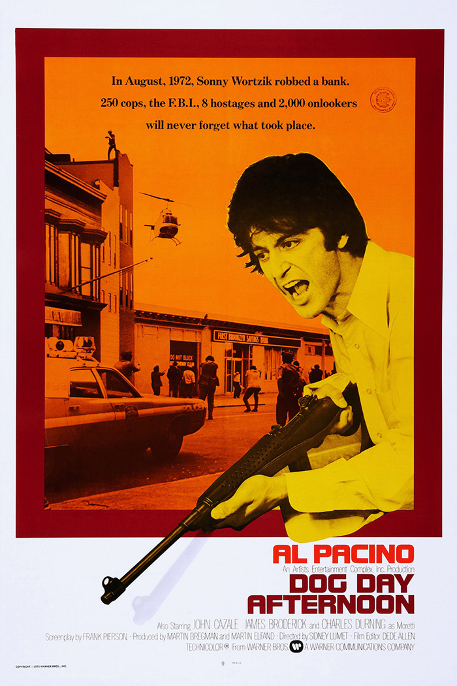

Dog Day Afternoon
48th Academy Awards
(Oscars 1976)
6 Nominations, 1 Award
| Nominations | ||
|---|---|---|
| Category | Nominees | Result |
| Best Picture | Martin Bregman and Martin Elfand | Nominated |
| Actor | Al Pacino | Nominated |
| Actor in a Supporting Role | Chris Sarandon | Nominated |
| Directing | Sidney Lumet | Nominated |
| Writing (Original Screenplay) | Frank Pierson | Won |
| Film Editing | Dede Allen | Nominated |